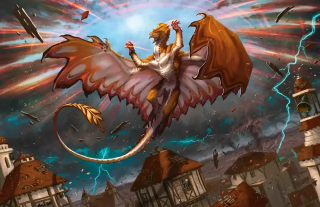

Власть над погодой
Control Weather
8 уровень, Преобразование

Время сотворения 10 минут
Дистанция На себя
Компоненты В, С, М (горящее благовоние)
Длительность Концентрация, вплоть до 8 часов
Пока заклинание действует, вы получаете контроль над погодой в пределах 5 миль от вас. Для сотворения этого заклинания вы должны находиться под открытым небом, и оно заканчивается преждевременно, если вы уходите с открытого воздуха.
Когда вы накладываете это заклинание, вы изменяете текущие погодные условия (определяются Мастером). Вы можете изменить количество осадков, температуру и ветер. Требуется 1к4 × 10 минут, чтобы новые условия вступили в силу. Как только это произойдёт, вы сможете снова изменить условия. Когда заклинание заканчивается, погода постепенно возвращается к норме.
Когда вы изменяете погодные условия, найдите текущее состояние в следующих таблицах и выберите новое состояние, на строчку выше или ниже текущего. При смене ветра вы можете изменить и его направление.
Осадки
| Ступень | Состояние |
| 1 | Чистое небо |
| 2 | Небольшая облачность |
| 3 | Пасмурно или густой туман |
| 4 | Дождь, град или снег |
| 5 | Проливной дождь, сильный град или метель |
Температура
| Ступень | Состояние |
| 1 | Чрезвычайная жара |
| 2 | Жара |
| 3 | Тепло |
| 4 | Прохладно |
| 5 | Холодно |
| 6 | Мороз |
Ветер
| Ступень | Состояние |
| 1 | Штиль |
| 2 | Умеренный ветер |
| 3 | Сильный ветер |
| 4 | Буря |
| 5 | Шторм |